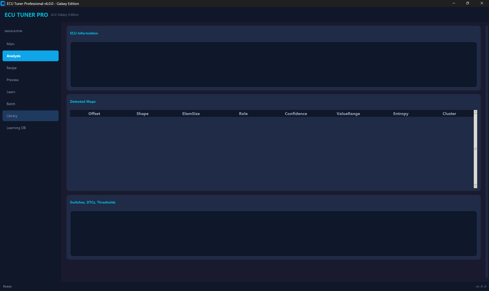
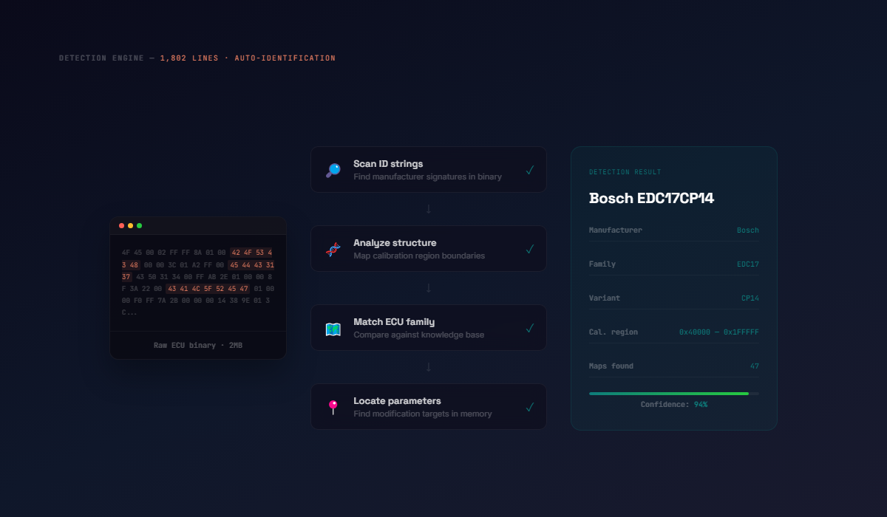
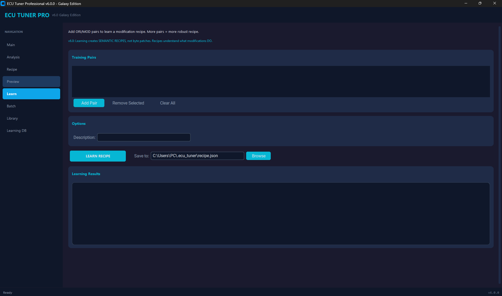
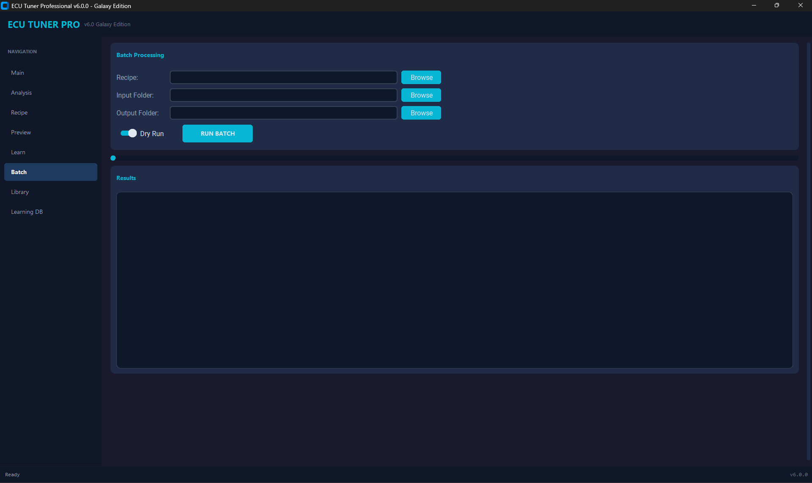
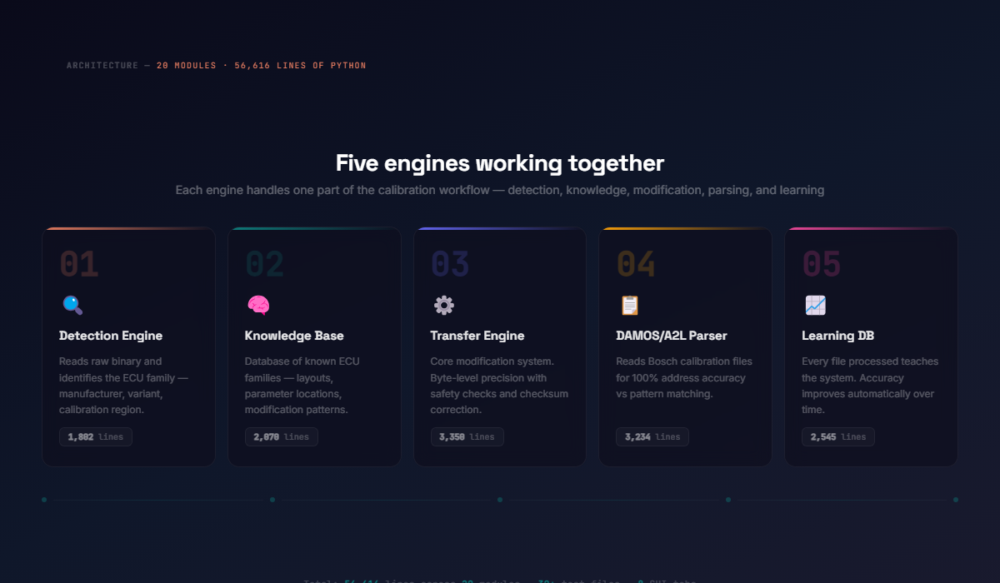
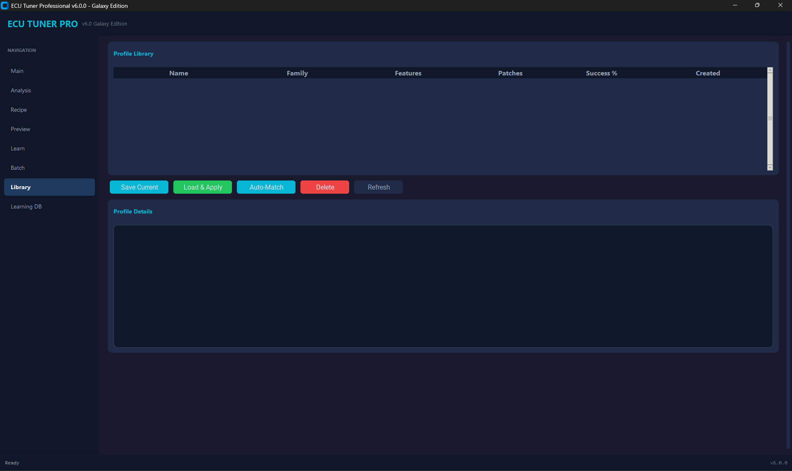
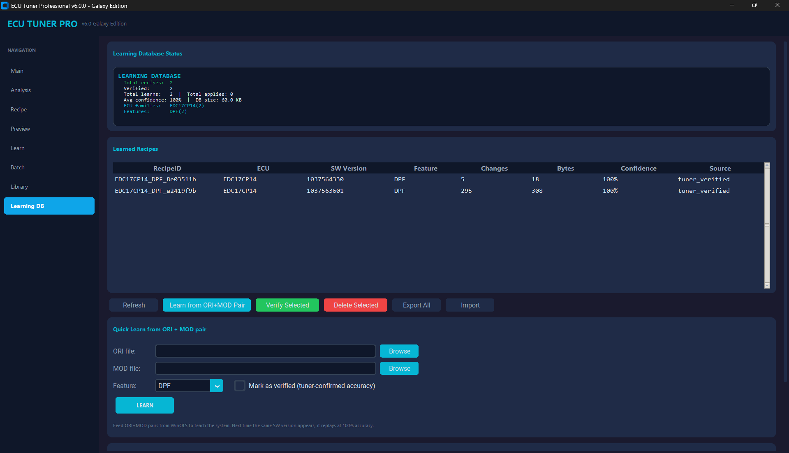
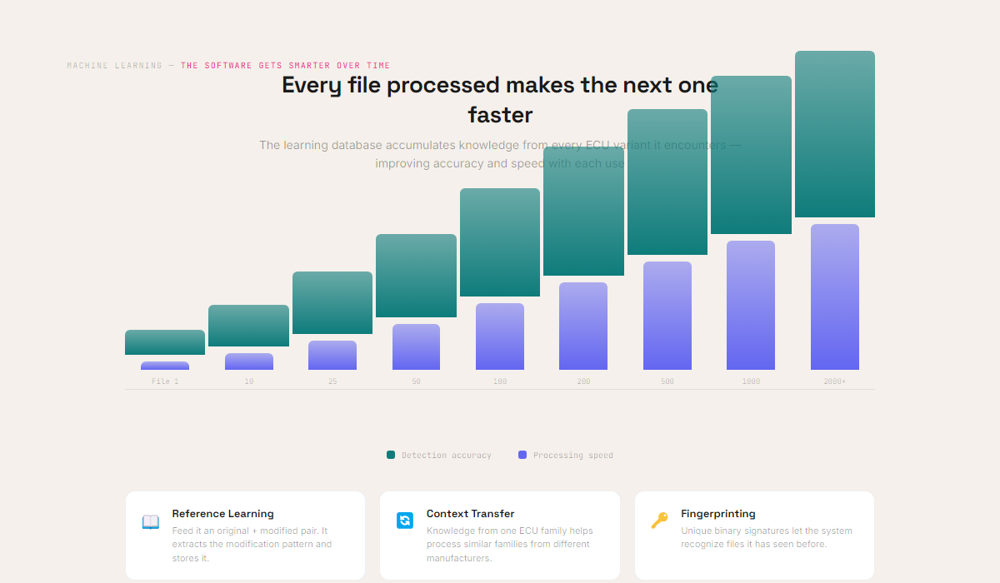
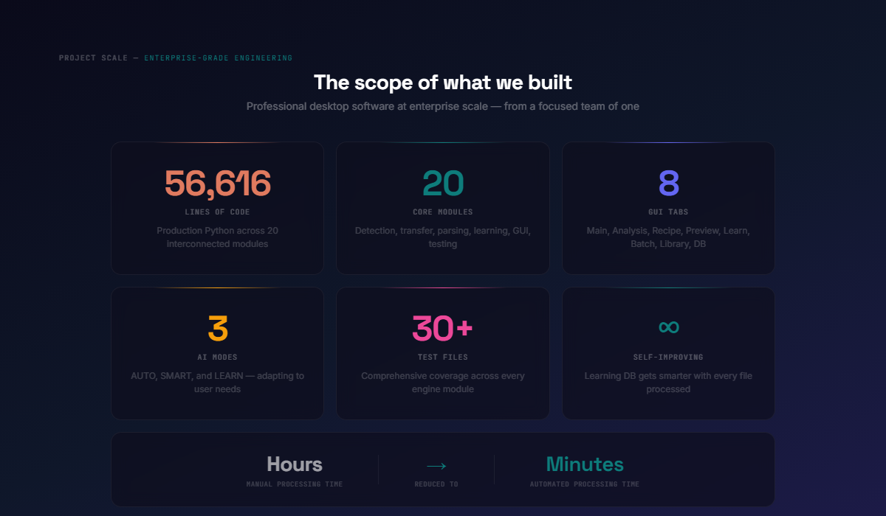

56,000 Lines of Precision Engineering for the Automotive Industry
We built a professional-grade desktop application that automates complex vehicle calibration data processing — work that previously required specialized engineers spending hours on every file.

ECU Tuner Professional v6.0 Galaxy Edition — four AI-powered operating modes
A specialist who needed to work 10x faster
Our client operates in the European automotive aftermarket — processing vehicle engine calibration files for customers across the continent. Each file is a binary dump from an engine control unit, containing thousands of data points that control how a vehicle's engine operates.
The work is extremely specialized. Every ECU family has a different internal structure. Making changes requires identifying specific data structures within megabytes of raw binary data and applying modifications with byte-level precision — without corrupting the file.

Analysis tab — automatic ECU detection, map identification, and confidence scoring

Software that thinks like an expert engineer
We built ECU Tuner Professional v6.0 — a complete desktop application with 56,616 lines of Python across 20 core modules, a full graphical interface, and three AI-powered operating modes that automate the entire calibration workflow.
The software doesn't just follow instructions — it understands ECU architecture. It reads a raw binary file and figures out what it's looking at, where the important data lives, what needs to change, and how to change it safely.

Learn mode — trains on file pairs

Batch processing — queue files at scale

Five engines working together
Detection Engine
Reads raw binary and identifies the ECU family automatically — scanning for ID strings, analyzing data patterns, mapping the calibration region.
Knowledge Base
A comprehensive database of known ECU families — their internal layouts, parameter locations, and modification patterns. The system's "brain."
Transfer Engine
The core modification system. Applies changes with byte-level precision, safety checks, boundary validation, and automatic checksum correction.
DAMOS/A2L Parser
Reads industry-standard calibration description files for 100% address accuracy instead of relying on pattern matching.
Learning Database
Every file processed teaches the system something new. The more files it processes, the faster and more accurate it becomes.

Profile Library — reusable modification templates

Learning DB — verified recipes with confidence scores


The numbers
- 56,616 lines of production code
- 20 core modules
- 3 AI-powered operating modes
- 30+ automated test files
- 8 GUI tabs
- Hours → Minutes processing time per file
The hardest part wasn't writing 56,000 lines of Python. It was understanding the domain deeply enough to encode expert knowledge into software. ECU calibration isn't something you learn from a tutorial. We spent weeks studying binary structures, analyzing reference files, and building the knowledge base one ECU family at a time.
Tech Stack
- Python 3.11+
- Tkinter GUI
- Binary Analysis
- A2L / DAMOS Parsing
- Machine Learning
- Checksum Algorithms
- pytest
- Modular Architecture
Scope
- Desktop application
- 20 core modules
- 8 GUI tabs
Team
- Fisnik Kurti — Engineering
Need specialized software that no off-the-shelf product can handle?
We build professional-grade tools for industries with unique technical requirements. If your work involves complex data processing or expert knowledge that needs to scale — let's talk.
Tell Us About Your Challenge